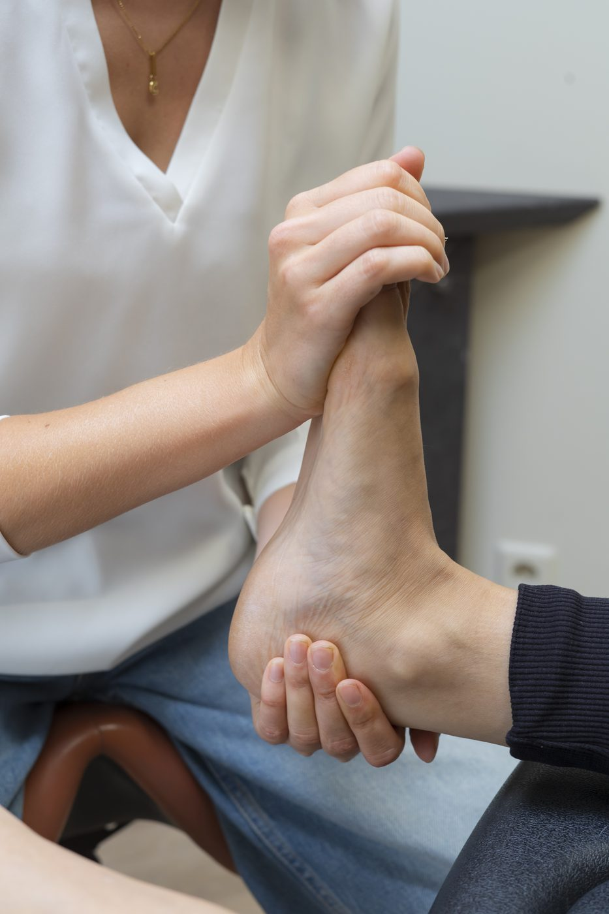
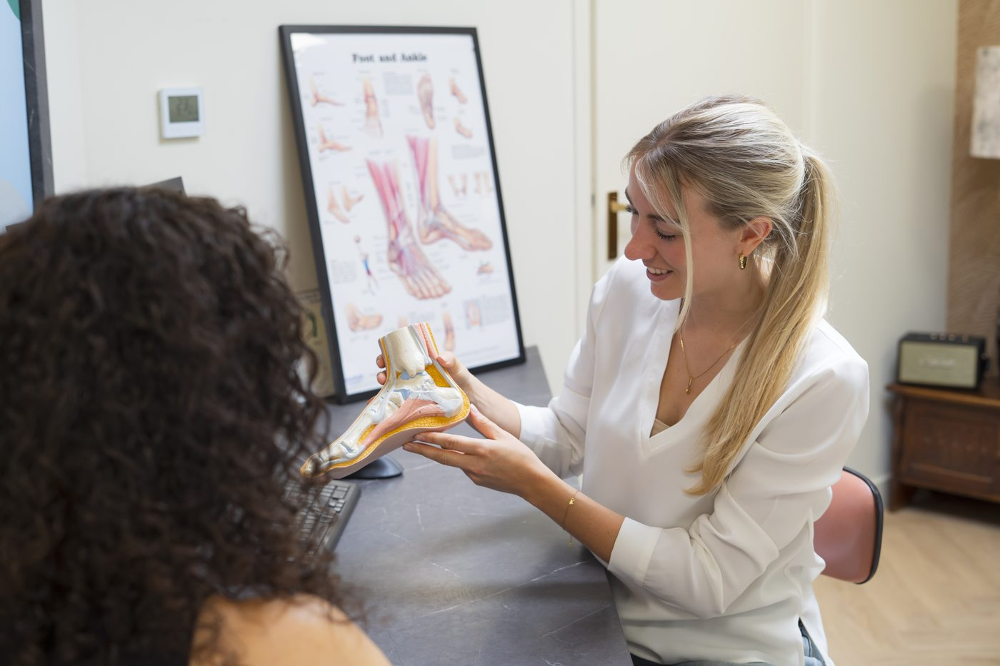

Wat wij doen
Onze
Behandelingen
Wij bieden een breed scala aan behandelingen voor uw voet- en beenklachten, van 3D-geprinte zolen tot tapetherapie.
Onze aanpak
Gerichte behandeling, op maat
Het onderzoek start met een uitgebreide anamnese. Tijdens dit gesprek lichten we uw klacht(en) uit en informeren we u over het vervolg van het onderzoek en eventuele kosten. Op basis daarvan kiezen wij de meest geschikte behandeling.


Podotherapeutische zolen op basis van 3D scan
Zooltherapie voor een standscorrectie en/of voor een betere drukverdeling onder de voet. Met een 3D-voetscan worden de zolen computergestuurd gefreesd en zijn ze zelfs dezelfde dag leverbaar.
Tapetherapie
Met het aanbrengen van tape wordt de spanning van spieren en pezen verminderd. Afhankelijk van de klacht wordt een andere soort tape gebruikt.
Schoenadvies
Onderzoek naar het type schoen, de pasvorm en het slijtagepatroon. Wij adviseren het beste schoeisel voor uw situatie en kunnen kleine schoenaanpassingen uitvoeren.
Orthonyxie
Een beugel van verchroomde draad wordt om de nagel geplaatst. Zo wordt de nagelvorm geleidelijk gecorrigeerd en wordt ingroeien voorkomen.
Siliconen orthese
Afwijkende teenstanden worden gecorrigeerd en/of drukplekken worden voorkomen en ontlast met behulp van een op maat gemaakte siliconen orthese.
Vilttherapie
Pijnlijke drukplekken of wondjes worden met vilt direct ontlast en beschermd. Vaak wordt ook tape gebruikt om het vilt op zijn plek te houden.
Instrumentele voetbehandeling
Behandeling van overmatige eelt- en likdoornvorming, ingegroeide nagels en wratten. Tevens wondverzorging bij diabetes mellitus.
Oefentherapie
Vaak zijn klachten het gevolg van functioneel disfunctioneren of een disbalans in bijvoorbeeld de spierspanning. Met specifieke oefeningen zorgen wij ervoor dat de balans wordt hersteld en de klachten afnemen.
Podo-manueeltherapie
Een manipulatietechniek voor het opheffen van blokkades in de voet. Met een snelle, korte beweging wordt een vastgezet gewricht losgemaakt.
Wilt u weten welke behandeling bij u past?
Na een uitgebreid onderzoek stelt onze podotherapeut een behandelplan op maat op. Maak een afspraak voor een eerste consult.